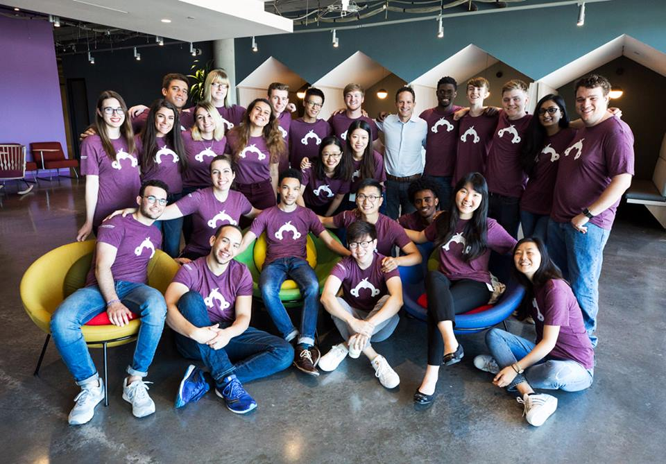
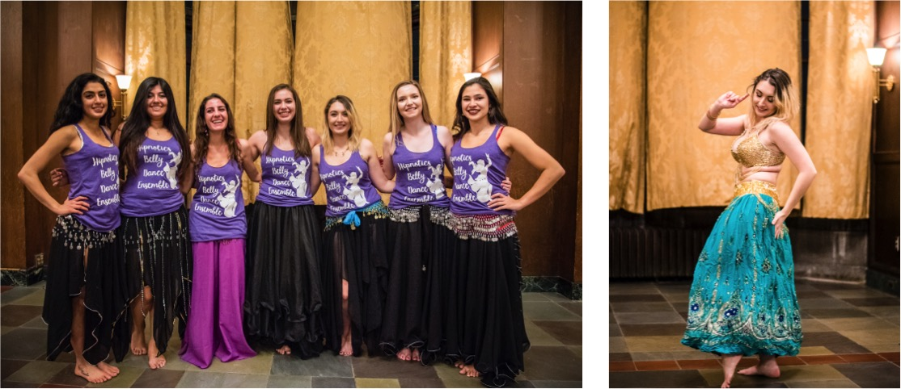

About


Python
PHP

C

C++

C#

Git

MySQL

ElasticSearch

Fuel

Pyramid

HTML

CSS

Javascript

Bootstrap

Unity

Linux

Arduino

Flask
Unix • HTTP/REST
Continuous Integration • Object-oriented programming
Runtime analysis • Regular Expressions • Agile development

Data Structures • Algorithms • Computer Security
Information Retrieval • System Design • Web Development
Mobile Innovation Development • Computer Architecture • Discrete Math

Caffeine break in CapuchinO ☕️🐒
SurveyMonkey Summer Interns 2018 with CEO Zander Lurie


Trove company kayaking event, July 2017

Search and RealPath features in the web app


Building custom equipment to monitor fruit fly eating habits in response to neural modulation, for the Dus neuroepigenetics lab at U of M.

 Check out Gwydion featured in Made at Michigan here!
Check out Gwydion featured in Made at Michigan here!
Professor Joanna Milluchick of Materials Science and Engineering, Associate Dean for Undergarduate Education, testing out Gwydion's Crystal Structures App


Testing a prototype acetabular (hip) surgical drill

Stryker interns volunteering at Camp Acorn, 2016

Reshma Saujani, the founder of Girls Who Code, giving a TED Talk about the importance of teaching young women to be comfortable with failure


Photo booth from PM Kickoff 2016

Peer Mentorship program coordinators


Michigan Women in Computing conference, 2017


Winter Showcase performance 2017

2018
2018

2018

2017

2017

2016

2016

2016

2016
586-871-4893
vcday@umich.edu